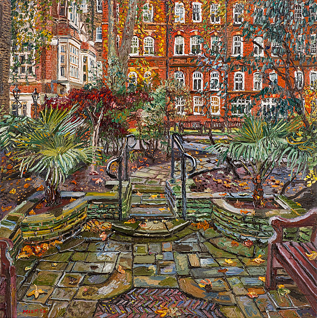
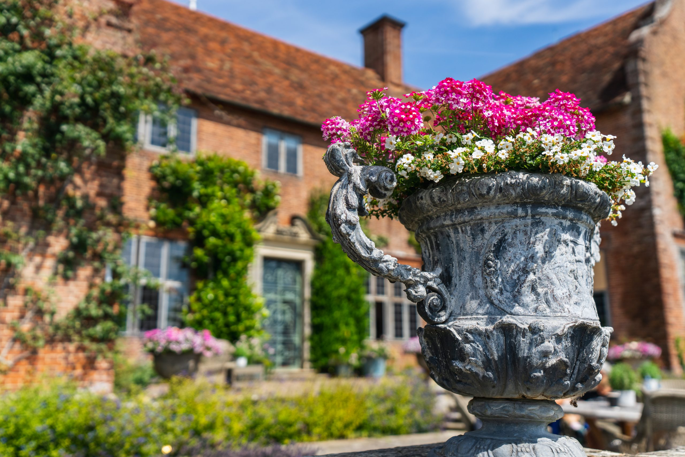

Research & Recording
We document parks and gardens, their history, and their significance to the community.




We share our love of gardens and landscapes: their design, making, history, and the stories around them. We encourage that interest in others through events, talks, visits, and learning opportunities for members and the wider public.
We protect Essex’s green spaces, past and present, by researching and recording important places and making that information available. We also support better future landscapes by giving informed comments on plans and development where heritage and public wellbeing are affected.
We always welcome new members. By joining us, you help our conservation and education work while meeting people who share your interest in gardens, parks, and local history.
Download the membership form from here. We look forward to hearing from you.
We document parks and gardens, their history, and their significance to the community.
We run lectures, guided visits, and learning events to engage the community and share our knowledge.
We provide informed comments on plans and development where heritage and public wellbeing are affected.